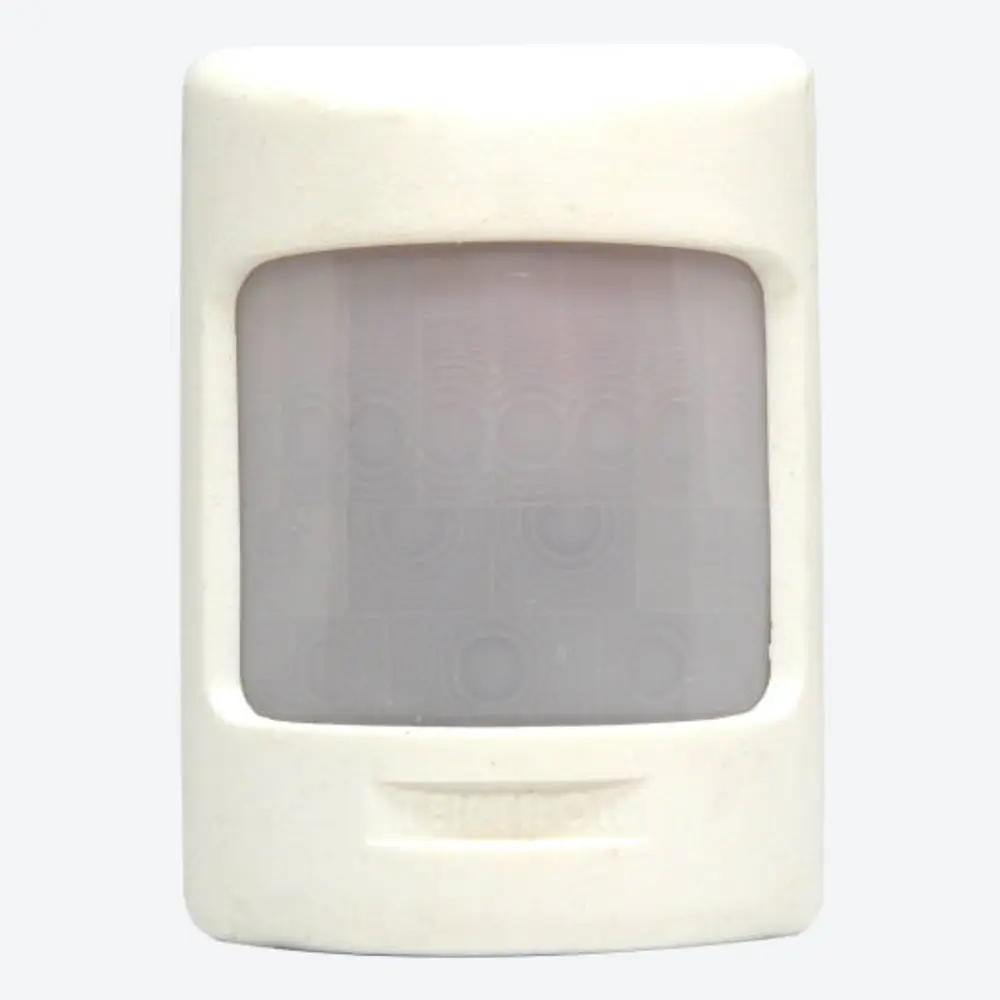

Sensores de movimento para corredores, escadas e grandes ambientes
Corredores, escadas, halls e áreas comuns têm uma coisa em comum: não existe um único sensor "para grandes ambientes". A escolha certa depende do formato do espaço, da direção em que as pessoas se deslocam, do ponto de instalação disponível e da cobertura que o ambiente exige — numa direção predominante ou ao redor de todo o ponto de instalação.
Depende também da velocidade com que quem circula se movimenta. A Tektron fabrica sensores de parede de alcance estendido, sensores com cobertura 360° e sensores mais sensíveis a movimentos discretos — a tecnologia certa depende de qual dessas situações descreve o seu ambiente.
O problema
- A luz fica acesa sem necessidade em ambientes compridos ou amplos Corredor, escada, garagem ou área comum controlados por um único interruptor incentivam deixar tudo aceso o dia inteiro.
- O ponto de acionamento fica longe de quem chega Em ambientes compridos, o interruptor manual pode estar do lado oposto de onde a pessoa entra.
- Um sensor mal posicionado deixa trechos sem cobertura A resposta do sensor depende da posição de instalação e da direção do deslocamento — um sensor pensado para um corredor estreito pode não cobrir bem um hall com mais de uma direção de circulação.
- Escolha baseada só no alcance nominal Alcance (distância frontal) e cobertura (ângulo ao redor do sensor) são critérios diferentes — um sensor de alcance longo numa única direção não resolve um cruzamento com circulação em vários sentidos.
- Pessoas se movimentam de formas diferentes Um ambiente frequentado por idosos ou pessoas com mobilidade reduzida tem um padrão de movimento mais sutil do que um corredor de passagem rápida.
O impacto
Em ambientes compridos ou amplos, o consumo de manter a luz acesa sem necessidade pesa mais do que num cômodo pequeno — e trechos mal cobertos pelo sensor continuam escuros mesmo com o restante do ambiente iluminado. Quando a tecnologia ou a cobertura não são compatíveis com o formato do espaço, o acionamento pode ficar tardio (a pessoa já percorreu parte do trajeto no escuro) ou a instalação pode precisar de retrabalho depois de pronta — o que gera desconforto para quem circula pelo ambiente todos os dias.
A solução Tektron
A Tektron fabrica soluções para três situações diferentes de grandes ambientes. O critério de escolha começa pelo formato do espaço e pela direção da circulação — não pelo produto.
Corredor, escada, depósito, garagem ou área comum
Para ambientes compridos ou amplos com uma direção predominante de passagem — corredor, escada, depósito, garagem ou área comum —, o BS-70 é a solução principal: sensor infravermelho de parede com alcance estendido de 12 m, articulador ajustável e espaguete de proteção nos fios. Para instalações que precisam de ajuste de sensibilidade e temporização ampliada (até 12 minutos), utilize o MI-700.

BS-70
Solução principal: alcance estendido para parede.
MI-700
Ajuste de sensibilidade e temporização ampliada.
Ver o MI-700, com ajuste de sensibilidade e temporização ampliada
Hall, patamar ou cruzamento com mais de uma direção
Quando a circulação vem de mais de uma direção — um cruzamento de corredores, um patamar de escada, um hall com mais de uma porta —, um sensor direcional como o BS-70/MI-700 pode não cobrir todos os ângulos. Para esses casos, a tecnologia indicada é a detecção 360° por radar Doppler, que cobre todas as direções ao redor do ponto de instalação: o TKR é a solução principal, com articulador e ajuste de sensibilidade. Para instalações com carga baixa (LED), utilize o TKT. Essa tecnologia depende de refletir o sinal nas paredes ao redor — em ambientes muito abertos, sem parede para refletir, a detecção fica fraca; por isso ela é mais indicada para halls e patamares contidos do que para áreas muito amplas e abertas.
TKR
Solução principal: articulador e ajuste de sensibilidade.
Ver o TKT, para instalações com carga baixa (LED)
Instalação, ligação elétrica e mais detalhes técnicos do TKR e do TKT estão na página de instalação no teto, onde eles também podem ser instalados em parede.
Movimentação lenta ou discreta
Em ambientes onde a circulação envolve movimento lento, pequenos gestos ou permanência com pouca movimentação, o sensor infravermelho tradicional — por depender diretamente da direção do deslocamento — pode não perceber esse tipo de movimento com a mesma consistência. Nesses casos, a tecnologia ultrassônica percebe movimentos mais sutis, o que ajuda a manter a iluminação acionada enquanto o ambiente continua ocupado: o MU-500 é a solução principal, detectando durante o dia e a noite. Para o mesmo cenário com fotocélula integrada, utilize o MU-600. Essa tecnologia é recomendada só para ambientes fechados de até 15 m² — não é indicada para áreas muito amplas e abertas.

MU-500
Solução principal: detecta durante o dia e a noite.

Ver o MU-600, com fotocélula integrada
Instalação, ligação elétrica e mais detalhes técnicos do MU-500 e do MU-600 estão na página de instalação no teto.
Características que orientam a escolha
Além da situação de instalação, estes critérios ajudam a comparar as tecnologias entre si:
Orientação de instalação
A resposta do sensor infravermelho depende diretamente da posição de instalação e da direção do deslocamento da pessoa em relação ao sensor — por isso o formato do ambiente (corredor estreito, hall aberto, cruzamento) é o primeiro critério para escolher entre um sensor direcional (BS-70, MI-700) e um sensor com cobertura 360° (TKR, TKT).
- Em instalações com mais de um sensor Doppler (TKR/TKT) ou ultrassônico (MU-500/MU-600) próximos, mantenha distância adequada e evite sobreposição das áreas de detecção — um sensor pode detectar o outro (interferência mútua).
- O sensor infravermelho não atravessa vidro — não detecta movimento do outro lado de uma porta ou divisória de vidro, e tem sensibilidade reduzida em ambientes muito quentes.
- Os sensores Doppler e ultrassônico dependem de refletir o sinal nas paredes ao redor — em ambientes muito amplos e abertos, sem parede para refletir, a detecção fica fraca. O ultrassônico é recomendado só para ambientes fechados de até 15 m².
- Em ambientes muito compridos ou muito amplos, avalie a necessidade de mais de um sensor para cobrir todo o percurso.
- Respeite o diagrama de ligação oficial do modelo escolhido.
Instalação e ligação elétrica
Os modelos desta página (BS-70, MI-700) usam o mesmo padrão de cores nos 3 fios, bivolt (127 V / 220 V):
Boas práticas de instalação:
- Desenergize o circuito antes de instalar.
- Confira a tensão (127 V ou 220 V) e a potência da carga: até 200 W em 127 V ou 350 W em 220 V, controlado por relé.
- Os dois modelos têm fusível de proteção de 4 A e espaguete de proteção nos fios.
- Respeite o diagrama de ligação oficial do modelo escolhido.
Resultado esperado
A iluminação passa a acionar de forma coerente com a circulação do ambiente — numa direção predominante ou ao redor de todo o ponto de instalação, conforme a situação —, reduzindo trechos escuros e o tempo em que a luz fica acesa sem necessidade. O resultado prático é o mesmo dos demais ambientes: a luz acende quando necessário e apaga sozinha, sem depender de ninguém lembrar.
Fabricação e suporte
Os produtos apresentados nesta página são fabricados no Brasil pela Tektron, com documentação técnica, diagramas de ligação e demais materiais de apoio disponíveis para cada modelo, e suporte técnico especializado para dúvidas de instalação em corredores, escadas e grandes ambientes.
Perguntas frequentes
- Qual sensor usar em corredor comprido?
- O BS-70 ou o MI-700, sensores infravermelho de parede com alcance estendido de 12 m — o MI-700 acrescenta ajuste de sensibilidade e temporização ampliada (até 12 minutos).
- Onde posicionar o sensor numa escada?
- A resposta do sensor depende diretamente da posição de instalação e da direção do deslocamento de quem sobe ou desce — confirme esses dois fatores conforme a documentação do modelo escolhido antes de instalar.
- Um único sensor cobre todo o ambiente?
- Nem sempre. Em ambientes muito compridos ou muito amplos, pode ser necessário mais de um sensor; em instalações com mais de um sensor Doppler ou ultrassônico, evite sobreposição das áreas de detecção.
- Sensor 360° é sempre a melhor opção?
- Não. A cobertura 360° (Doppler ou ultrassônico) depende de refletir o sinal nas paredes ao redor — em ambientes muito amplos e abertos, sem parede para refletir, a detecção fica fraca. Para corredores e áreas amplas com direção predominante de passagem, um sensor direcional como o BS-70/MI-700 é mais indicado.
- Qual solução funciona melhor quando o movimento é lento?
- A tecnologia ultrassônica (MU-500 ou MU-600), detalhada na página de instalação no teto — ela percebe movimentos mais sutis do que o infravermelho, o que favorece ambientes com usuários de movimentação lenta ou discreta.
- Posso instalar dois sensores no mesmo ambiente?
- Sim, mas em instalações com mais de um sensor Doppler ou ultrassônico, mantenha distância adequada e evite sobreposição das áreas de detecção — um sensor pode detectar o outro (interferência mútua).
- O sensor detecta alguém completamente parado?
- Não. Infravermelho, Doppler e ultrassônico dependem de variação — de calor, de sinal refletido ou de deslocamento de ar, respectivamente. Parado, não há variação a captar. Por isso, o termo técnico adotado pela Tektron é sensor de movimento, embora no mercado brasileiro ele também seja conhecido como sensor de presença.
- Qual é a diferença entre alcance e cobertura?
- Alcance é a distância frontal que o sensor detecta (por exemplo, 12 m no BS-70/MI-700); cobertura é o ângulo ao redor do ponto de instalação (110° frontal, ou 360° nos modelos Doppler e ultrassônico). Um sensor pode ter alcance longo numa única direção sem ter cobertura ao redor, e vice-versa.
Outras páginas de aplicações
- Sensor de movimento para caixa 4x2 Para automatizar um interruptor já existente, sem trocar o ponto elétrico.
- Sensor de movimento para instalação no teto Sobrepor, embutir no forro, cobertura 360° ou movimentação lenta — por tipo de teto.
- Soluções para iluminação de áreas externas Sensores de movimento e fotocélulas para parede, poste ou área externa coberta.
- Minuterias para condomínios e sistemas coletivos Para controle centralizado da iluminação de áreas comuns e externas de condomínio.
Próximo passo
Seja qual for a situação — corredor comprido, hall com mais de uma direção ou movimentação lenta —, o próximo passo é o mesmo: